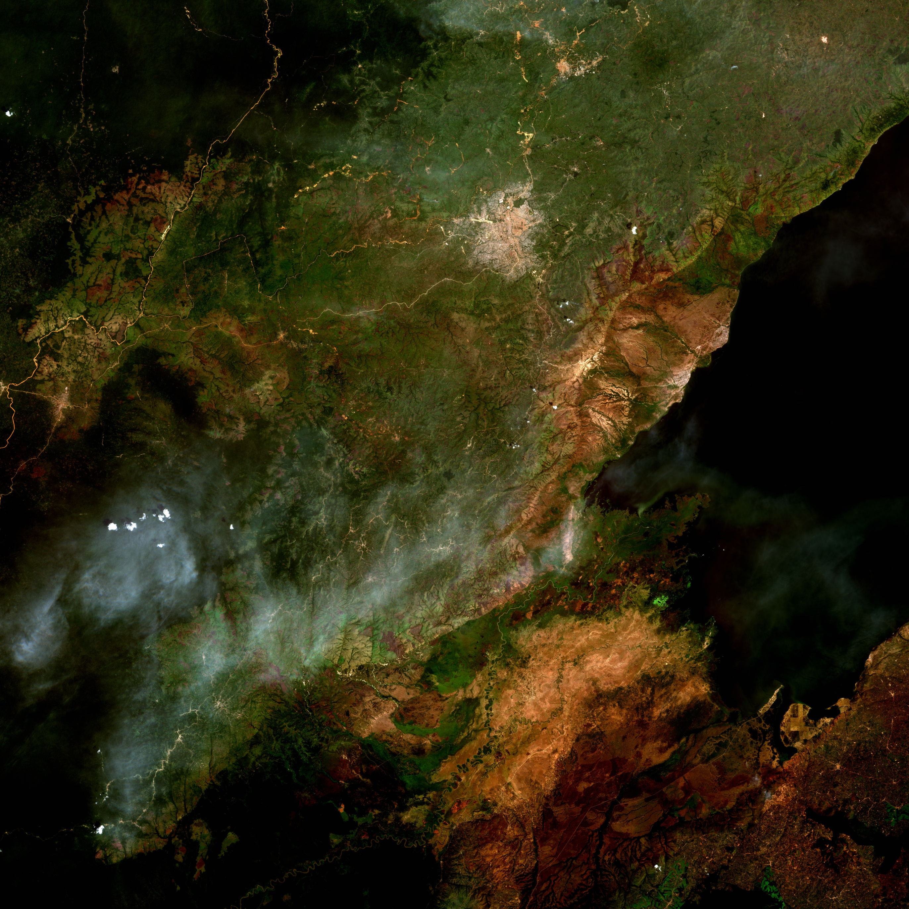

Matadisco
An open, decentralized network for data discovery. Publish metadata about any dataset to AT Protocol. Build community portals. Find what matters.
Open data is only as useful as it is discoverable
Petabytes of satellite imagery, climate models, and genomic sequences sit in public repositories — yet finding the right data means navigating dozens of siloed portals, each with different interfaces, APIs, and blind spots.
If you generate a derived dataset or clean up an existing one, there's often no way to make it findable. Government portals decide what gets published. Aggregators are centralized. Community contributions get lost.
How Matadisco works
Matadisco separates data discovery from data storage. Three pieces work together:
AT Protocol
Matadisco is built on AT Protocol, an open social protocol. Every record is cryptographically signed. No single entity controls the network and all components are open source and can be self-hosted.
Producers
Write Matadisco records to a PDS (Personal Data Server). A record is a lightweight pointer to metadata — a link, an optional preview, and a timestamp — so the schema works with any metadata standard: STAC, DataCite, IIIF, RSS, and more. A producer typically watches an existing catalogue or data source and publishes records automatically.
Consumers
Read records from the network via a PDS or Jetstream, filter for what's relevant, and present them as a web-based portal for users. A satellite imagery portal, a scientific data hub, a cultural heritage archive — each built in about 100 lines of code.
The schema
The Matadisco record is defined as an ATProto Lexicon. In MLF syntax:
| 1 | /// A Matadisco record |
| 2 | @key("any") |
| 3 | record matadisco { |
| 4 | /// The time the original metadata/data was published |
| 5 | publishedAt!: Datetime, |
| 6 | /// A URI that links to resource containing the metadata |
| 7 | resource!: Uri, |
| 8 | preview: preview, |
| 9 | tags: tags, |
| 10 | } |
| 11 | |
| 12 | /// Preview of the data |
| 13 | def type preview = { |
| 14 | /// The media type the preview has |
| 15 | mimeType!: string, |
| 16 | /// The URL to the preview |
| 17 | url: Uri, |
| 18 | }; |
| 19 | |
| 20 | /// Tags that describe the metadata. A tag might have a corresponding top-level key with the same name. |
| 21 | def type tags = tag[] constrained { |
| 22 | maxLength: 20, |
| 23 | }; |
| 24 | |
| 25 | /// A single tag |
| 26 | inline type tag = string constrained { |
| 27 | minLength: 1, |
| 28 | maxLength: 200, |
| 29 | }; |
Only resource and publishdAt are required. The preview is optional — for satellite imagery it's a thumbnail, for articles a summary, for podcasts an audio snippet.
See it in action
The matadisco-viewer streams new ATProto records in real time and renders them. Currently showing Copernicus Sentinel-2 satellite imagery:

Producers & Consumers
Producers write records into the network; consumers read and display them. Because records flow through an open network, institutions manage their catalogues independently while participating in shared discovery. See working implementations of producers, consumers, or both:
- sentinel-to-atproto (producer) — listens to Element 84's Earth Search STAC catalogue for new Sentinel-2 imagery and writes records to a PDS.
- gdi-de-csw-to-atproto (producer) — imports metadata from the German geodata catalogue (GDI-DE) via CSW and publishes records to ATProto.
- matadisco-viewer (consumer) — subscribes to a Bluesky Jetstream relay or reads from a PDS, filters for Matadisco records, and displays them as a portal with previews.
- matadisco-geo-viewer (consumer) — a viewer specialised for geospatial metadata records with support for STAC metadata, rendering spatial previews on a map. Supports consumption from both Jetstream and PDS.
- niiifty (producer & consumer) — publishes Matadisco records of IIIF (International Image Interoperability Framework) manifests (backed by IPFS storage) and provides a dedicated AppView with AI-powered semantic search for discovering cultural heritage media.
Prior art & influences
- FROST by Tom Nicholas — a Federated Registry of Scientific Things. His motivating essay on why science needs a social network for data is an excellent starting point.
- Edward Silverton's explorations of ATProto for IIIF and GLAM data.
- Community discussions on metadata for long-form content and cross-platform discovery.
Get started
Matadisco is experimental — things may break or change. That also means there's room to shape it. Here's how to get involved:
What's next
- Image-based sources like GLAM collections using IIIF
- Non-image sources — podcasts, research datasets, publications
- Schema evolution informed by real-world use across different domains
Publish records under your own namespace, build a portal for your community, or propose changes to the schema. We'd love to hear from anyone working in open data, metadata standards, or scientific infrastructure.